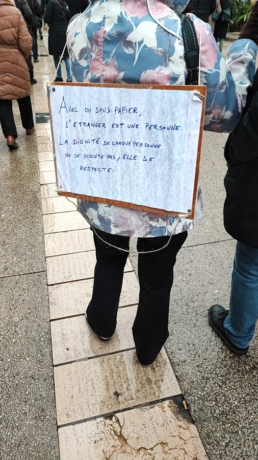
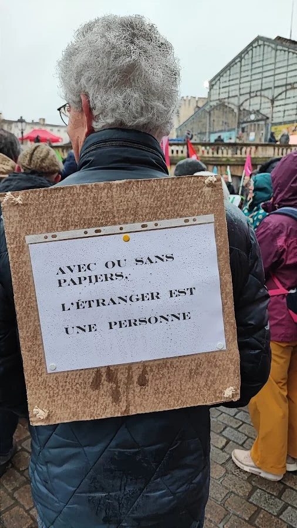
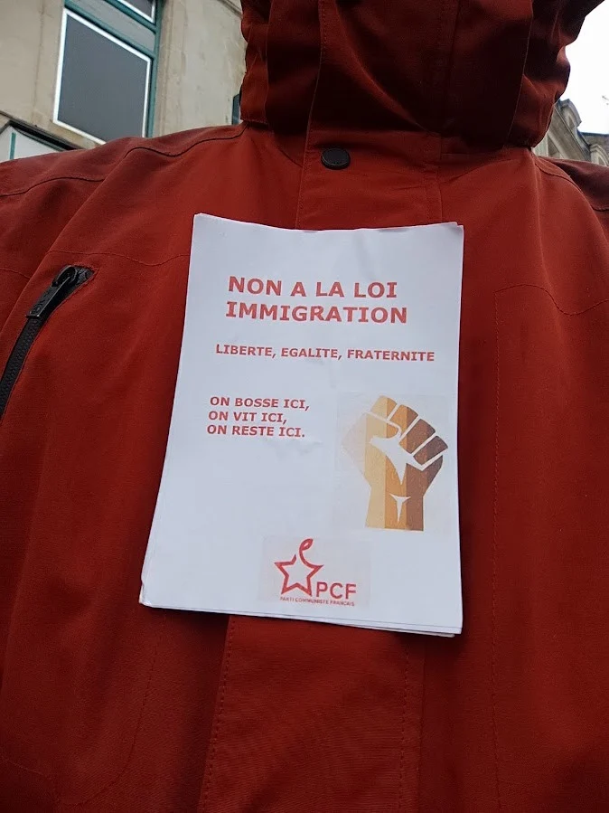

Compte rendu fédéral
À Niort, nous avons marché contre la loi immigration le 21 janvier
Date indiquée par Facebook · 21 janvier 2024
Repères éditoriaux
Nous avons pris la parole lors de la marche à Niort contre la loi immigration. Notre déclaration et les photos du rassemblement documentent le refus de faire des immigrés les boucs émissaires des crises.
Texte conservé avec la publication
Déclaration du PCF en Deux-Sèvres cematin lors de la marche contre la loi immigration.
Depuis 1945, plus d’une centaine de textes sur l’immigration ont été votés.
Le gouvernement Macron n’échappe pas à cette frénésie législative puisqu’il a fait adopter 2 Lois sur l’immigration en 5 ans (la Loi Collomb en 2018 et celle de Darmanin fin 2023). Cette dernière Loi aggrave la stratégie du « bouc émissaire » faisant des immigrés les responsables de toutes les crises alors que ces crises sont dues au capitalisme le plus débridé.
Des faux arguments rabâchés, des discours xénophobes qui s’appuient sur des mythes et des affirmations infondées, des chiffres faux, manipulés, sont destinés à justifier la chasse aux étrangers et trouvent un écho auprès des françaises et des français qui les poussent vers la droite et l’extrême droite.
Avec un peuple qui souffre, avec l’appauvrissement des jeunes, des familles avec la destruction des services publics, de l’hôpital, de l’Éducation Nationale laïque et gratuite, de la SNCF, de l’énergie, il est facile de laisser croire que c’est la faute des migrants … Et sur ce terreau, le gouvernement fait voter une loi inique qui prépare une grande piste d’atterrissage pour que l’extrême droite arrive au pouvoir en France.
Le programme de l’extrême droite se met en place avec la préférence nationale ou « priorité nationale » comme le dit Marine Le Pen.
Rappelons-nous février 1933, les industriels allemands financent la campagne d’Hitler face à ce qu’ils appellent le péril juif en Europe.
Rappelons-nous la tentative de coup d’état des chemises brunes en France en février 1934 et leur soutien à Franco en 1936 contre la jeune République espagnole parce qu’elle voulait faire vivre l’égalité, la fraternité entre les peuples.
Rappelons-nous le soutien de l’extrême droite pour les guerres coloniales, de l’OAS de Jean-Marie Le Pen, des voyages de soutien de Marine Le Pen ou de Jordan Bardella auprès des leaders de l’extrême droite européens, tels que ceux de l’AFD, parti nazi d’Allemagne, ou encore de Hongrie, d’Autriche, d’Italie, etc...
Rappelons-nous, pendant la campagne électorale de 2022 et même encore, nous entendons parler « d’une guerre de civilisation entre blanc et noir ou arabe », de la soi-disante « grande invasion de l’Europe par la méditerranée » ou encore du risque de « grand remplacement » !
Rappelons-nous, dans les années 30 à 44, une fois interdit les partis communistes en Europe, on a « réglé » le sort des juifs en les éliminant, on a réglé le sort des syndicalistes, des Roms, des Tziganes, des homosexuels, des francs maçons, des socialistes, etc...
Qu’en sera-t-il demain après avoir réglé le sort des étrangers ?
Aujourd’hui comme hier, l’extrême droite est la même.
Faire preuve d’humanité, d’égalité et de fraternité, c’est chercher la vérité et la dire, c’est ne pas subir la loi du mensonge du gouvernement, de la droite et de l’extrême droite sur l’immigration.
Le Parti Communiste Français en Deux-Sèvres, ses militants appellent à désobéir pour protéger les migrants en Deux-Sèvres, pour que soit respectée la Convention Internationale de l’Onu sur la « protection des droits des enfants, de tous les travailleurs migrants et des membres de leur famille ».
Rejoignez massivement les associations telles que Migr’action79, ARRDI, la CIMADE, et les autres associations de défense des migrants, les organisations syndicales, les organisations politiques qui militent pour des jours heureux, pour le respect des droits humains ici et partout dans le monde.
La France de Macron, de la droite et de l’extrême droite n’est pas notre France,
Comme l’a chanté Jean Ferrat,
« Ma France,
C’est cet air de liberté au delà des frontières
Aux peuples étrangers qui donnait le vertige
Et dont vous usurpez aujourd’hui le prestige,
Elle répond toujours du nom de Robespierre »
C’est pour cette France là que le PCF se bat depuis toujours...une France fraternelle, laïque, ouverte et accueillante pour toutes et tous, quelque soit leur couleur de peau et leur croyance.
Si cette loi est promulguée, Madame Coralie Desnoue, présidente du Conseil Départemental, m’a répondu : elle appliquera la loi. La loi c’est la loi, point barre...c’est la réaction droitière à la Ciotti qui est à l’œuvre dans notre département.
Vous, Madame la Préfète, ne faites pas comme Madame Desnoue, n’appliquez pas cette loi si elle est promulguée !
Ne faites pas la chasse aux migrants dans les Deux-Sèvres ! Au contraire, régularisez les travailleurs sans papiers, protégez leurs familles, les mineurs isolés arrivant et s’installant en Deux-Sèvres !
Avec courage, le préfet Jean Moulin est entré dans l’histoire par humanité, pour défendre la vie humaine avant tout. Quelle victoire pour le féminisme ce serait qu’en 2024, ce soit une préfète qui rentre dans l’histoire pour son courage !
Niort, le 21 janvier 2024
#LoiImmigration
#deuxsevres



Sources
Archive rouge · export Facebook · AR-0002-FB-01492
À lire aussi · Contre la loi immigration. Notre appel à manifester à Niort